San Andreas · 24 records · coverage: partial
Characters — Grand Theft Auto: San Andreas
Named characters with role, affiliations and a short summary.
Download characters.json Whole game bundle
| Image | Name | Role | Affiliations | Status |
|---|---|---|---|---|
 | Carl 'CJ' Johnson | Protagonist | Grove Street Families | Alive |
 | Catalina | Ally, robber | Independent | Alive |
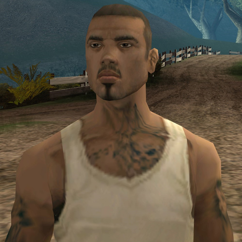 | Cesar Vialpando | Ally, Aztecas leader | Varrios Los Aztecas | Alive |
 | Denise Robinson | Girlfriend | Grove Street Families | Alive |
 | Eddie Pulaski | Antagonist, corrupt officer | C.R.A.S.H. | Deceased |
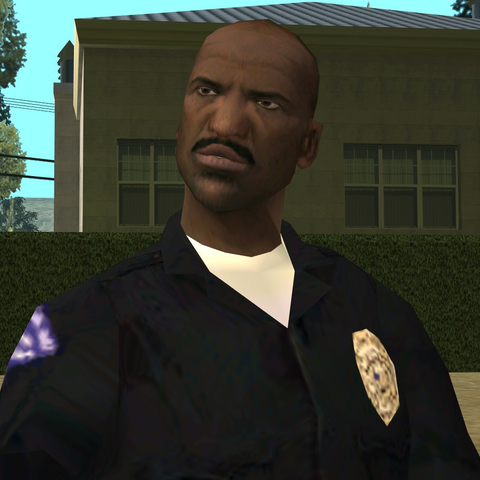 | Frank Tenpenny | Antagonist, corrupt C.R.A.S.H. officer | C.R.A.S.H., Los Santos Police Department | Deceased |
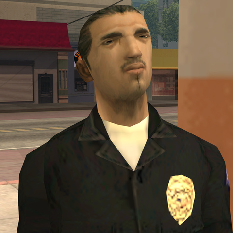 | Jimmy Hernandez | Corrupt officer, informant | C.R.A.S.H. | Deceased |
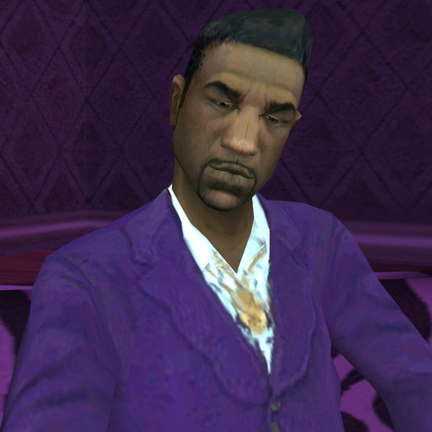 | Jizzy B | Pimp, drug dealer | Loco Syndicate | Deceased |
 | Ken Rosenberg | Lawyer, casino manager | Leone Crime Family, Caligula's Palace | Alive |
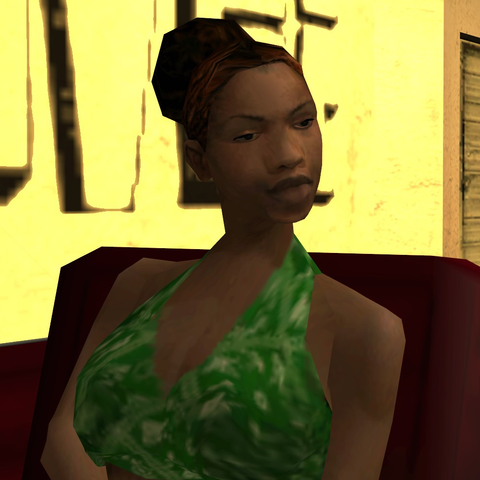 | Kendl Johnson | CJ's sister | Grove Street Families | Alive |
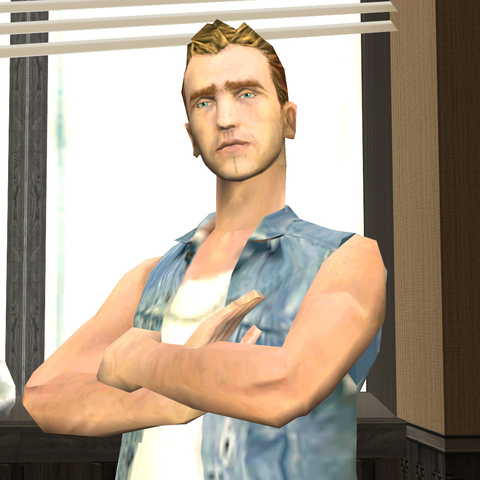 | Kent Paul | Music manager | Madd Dogg Records | Alive |
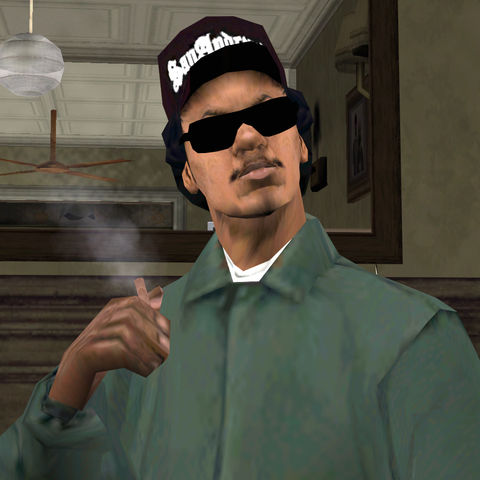 | Lance 'Ryder' Wilson | Antagonist, former Grove member | Grove Street Families (former), Ballas (secretly) | Deceased |
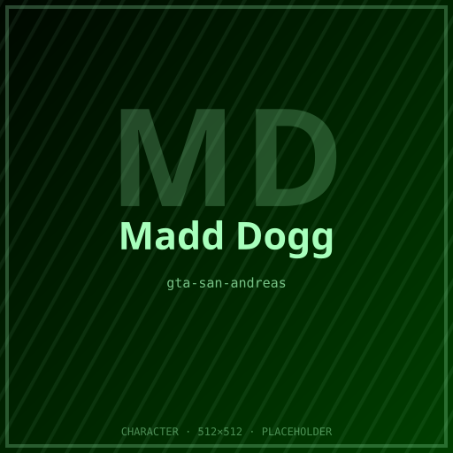 | Madd Dogg | Rapper | Madd Dogg Records | Alive |
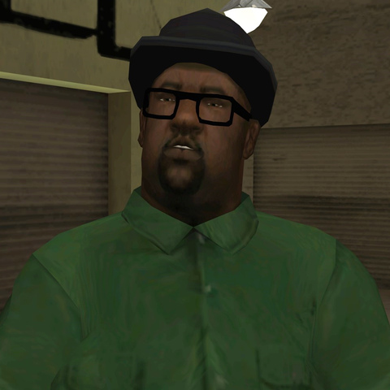 | Melvin 'Big Smoke' Harris | Antagonist, former Grove member | Grove Street Families (former), Ballas (secretly) | Deceased |
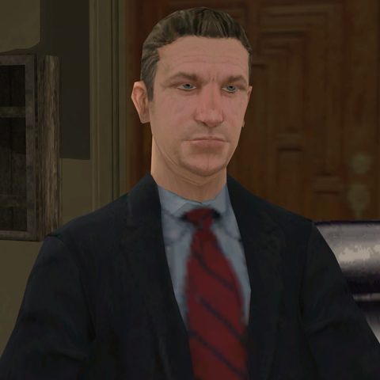 | Mike Toreno | Ally, covert agent | US government (covert) | Alive |
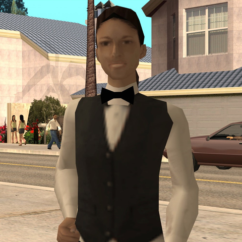 | Millie Perkins | Caligula's manager | Caligula's Palace | Alive |
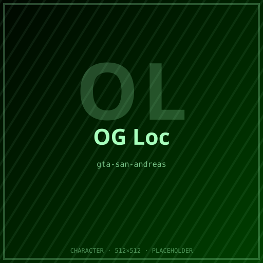 | OG Loc | Rapper, comic relief | Grove Street Families | Alive |
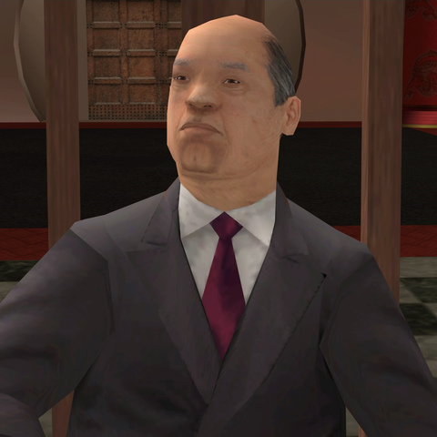 | Ran Fa Li | Triad elder | San Fierro Triads | Alive |
 | Salvatore Leone | Leone don | Leone Crime Family | Alive |
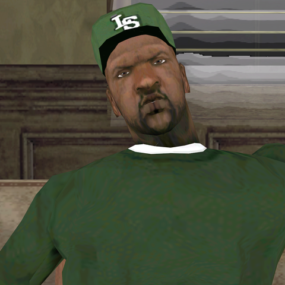 | Sean 'Sweet' Johnson | Grove Street leader, brother | Grove Street Families | Alive |
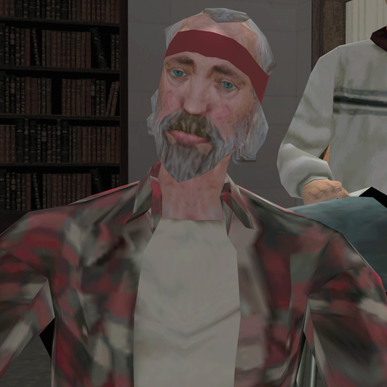 | The Truth | Ally, conspiracy theorist | Independent | Alive |
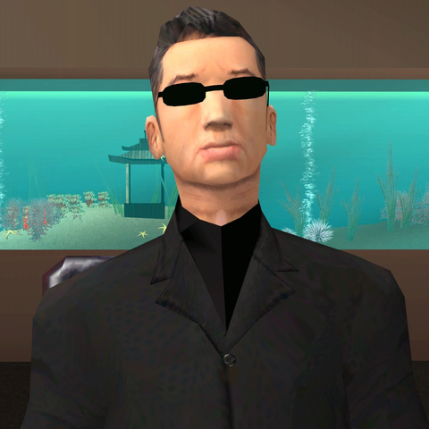 | Woozie | Mission giver | — | — |
 | Wu Zi Mu ('Woozie') | Ally, Triad leader | San Fierro Triads | Alive |
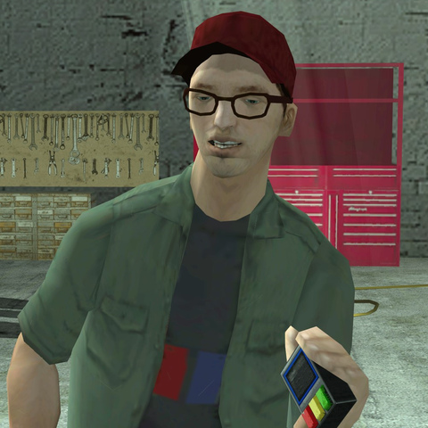 | Zero | Ally, electronics expert | Zero's RC | Alive |
Field definitions
| Field | Type | Required | Notes |
|---|---|---|---|
name | string | yes | |
role | string | yes | |
affiliations | array | yes | array of strings |
status | string | no | |
summary | string | yes | |
first_appearance | string | no | |
image | string | null | no | |
verified | boolean | yes | |
source | string | no |